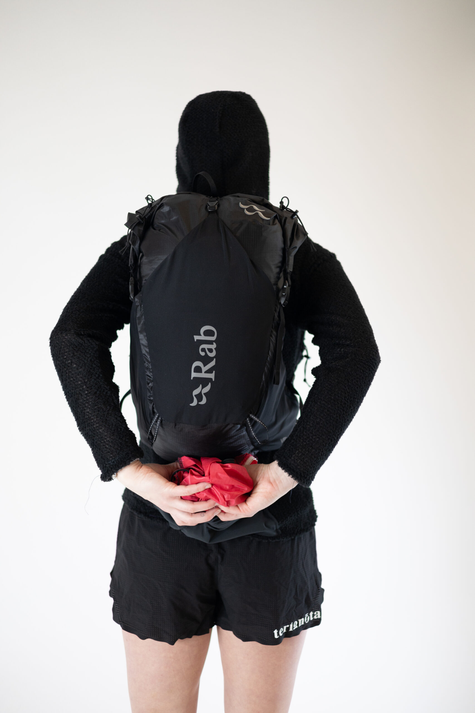
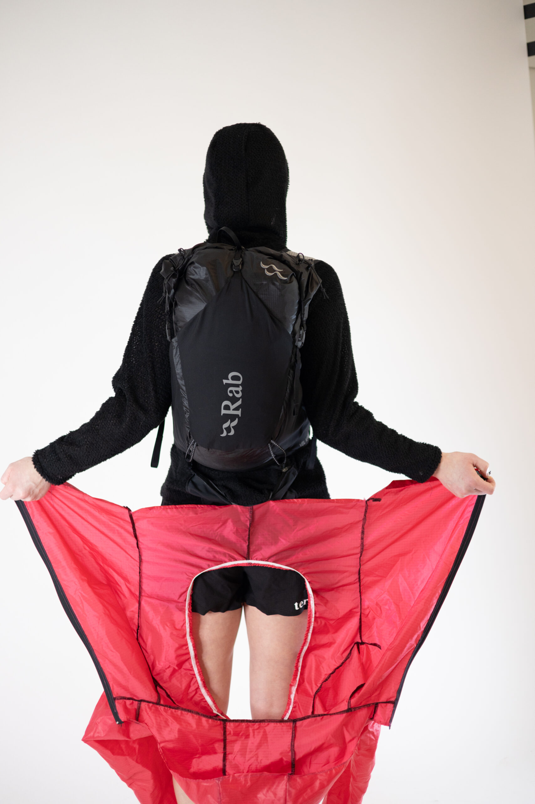
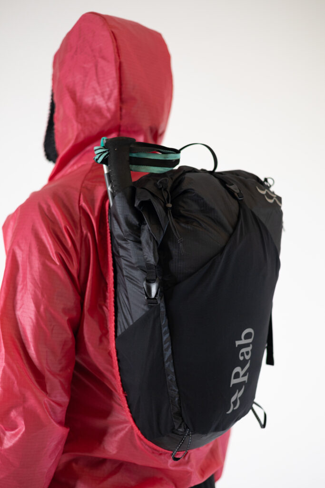
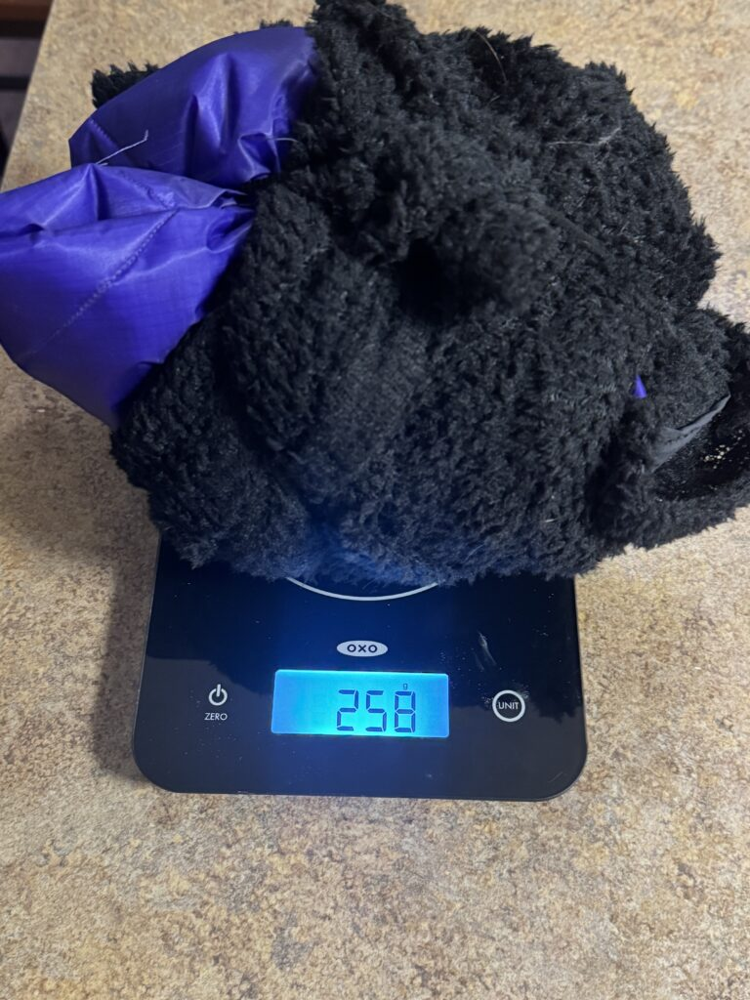

Outerwear System / Fastpacking / Mountain Weather
Jack RABit Fastpacking Jacket System
A two-layer jacket system built for sustained movement through exposed, rugged terrain, where weather protection, heat management, and pack access all need to happen without breaking stride.

The Jack RABit is a 2-in-one jacket system. The base layer is zoned with Polartec Alpha Direct 4004 in high-output areas, including where backpack straps sit on the body.
The front is layered with Climashield Apex 2.5 for ultralight insulation, even when wet with precipitation or sweat.
The back of the base layer has a pocket that deploys a shell that snaps around the backpack, making for easy donning and doffing without needing to stop forward movement.




Design Intent
Protection that works with the pack, not against it.
The jacket is designed around the reality of long mountain days: changing output, changing weather, and a pack that stays on for hours. The shell deploys around the backpack so athletes can stay efficient, manage warmth, and keep moving across demanding terrain.